Part A: Exploring the Power of Flow Models
In this part, I won't be training my own model yet. Instead, I'll be using a pretrained text-to-image model called PixNerd, and creating 512×512 images.
PixNerd can't directly take in text, however! We need to convert the text inputs into embeddings first. To do this, I'll be using a pretrained language model based on Qwen3. This language model will take the actual text inputs, transform them into embeddings, and then feed those embeddings into PixNerd to generate images. This ensures that PixNerd doesn't have to worry about understanding language, and can act purely as a good representation of a flow field onto the manifold of natural images.
1. Visualizing Training and Sampling
Before we apply the flow matching model, it's good to understand what the model is trying to approximate. In the optimal transport flow-matching formulation, we attempt to match randomly-generated images (typically Gaussian noise) onto the manifold (or the reasonable subset) of "natural" images. We pair up a random image, \(x_0\), and an image on our natural image manifold, \(x_1\), using simple linear interpolation. Formalized, this looks like:
\[ x_t = (1-t)x_0+tx_1, \quad x_0 = \epsilon \sim \mathcal{N}(0, I), \quad t\in [0,1] \]
(A1)
If you plug in \(t=0\) and \(t=1\), you can recover \(x_0\) and \(x_1\) directly, but now we also have a continuum of images that lie somewhere between the noise and our true image. To get from one instance to the other, we can find the velocity between the two. The flow matching model actually predicts this velocity:
\[ \frac{dx_t}{dt} = x_1 - x_0 = \frac{x_1 - x_t}{1 - t} \sim v_{\theta}(x_t, t, c) \]
(A2)
The \(c\) term in \(v_{\theta}\) is our condition, and it allows us to generate images of a specific type, e.g. faces, flowers, etc. In PixNerd, the conditioning will be the embedding vectors generated from our text input and Qwen3. We train the model using a simple L2 loss:
\[ \mathcal{L}(\theta) = \left\| v_{\theta}(x_t, t, c) - (x_1-x_0) \right\|_2^2 \]
(A3)
Each pair of \(x_0\) and \(x_1\) is a straight path, but the actual trajectories that we create are usually curved since our predicted velocities change significantly depending on the condition, current image, and timestep. So, we use Euler integration over a series of smaller timesteps between 0 and 1, recomputing the velocity each time to get a more accurate trajectory.
I'll be using my own image of the tipped over tractor from Cars for these tests!
My source image for Part A — a (literally) tipped-over tractor.
Constructing Noisy Training Inputs
Below, I'm using equation A1 to visualize what different \(x_t\) look like for different times. These kinds of images are what the model would see while training and sampling.
Classical Denoising
Before we move to the flow model, let's try some classical denoising methods. We can rearrange equation A1 to get our current image as a noised version of the desired image, which would allow us to use a low-pass filter to approximate what the original would look like.
\[ \frac{x_t}{t}=x_1+\frac{1-t}{t}\epsilon, \qquad \hat{x}_1^{\text{blur}}=G_\sigma\!\left(\frac{x_t}{t}\right) \]
(A4)
Below, I've shown the results of this denoising with different noise levels. I chose the sigma values for the Gaussian blur from a predetermined selection of [1, 2, 4, 8, 16] and selected the one with the lowest mean squared error.
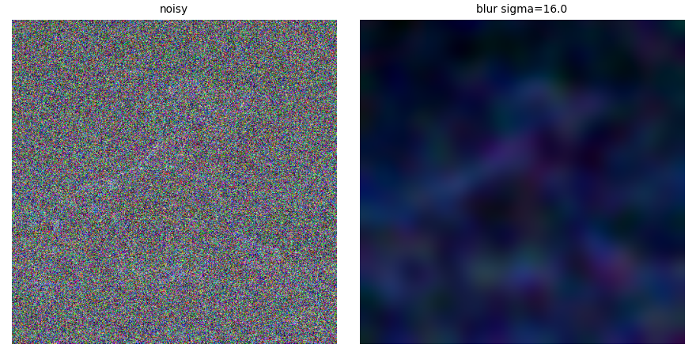
t = 0.25
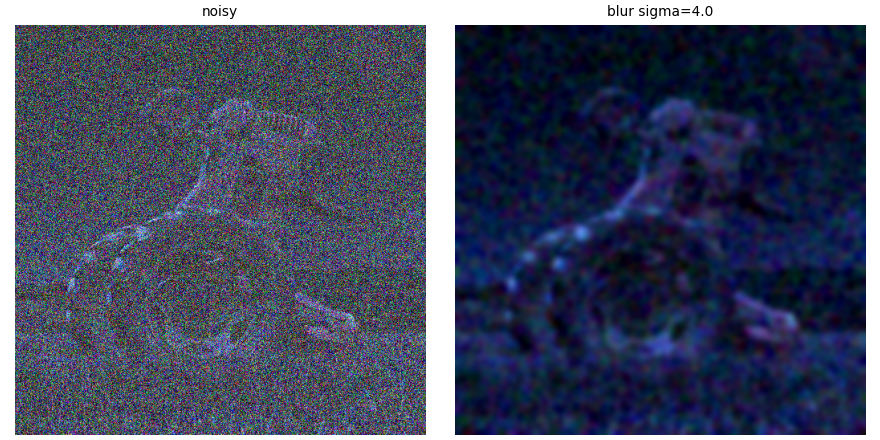
t = 0.50
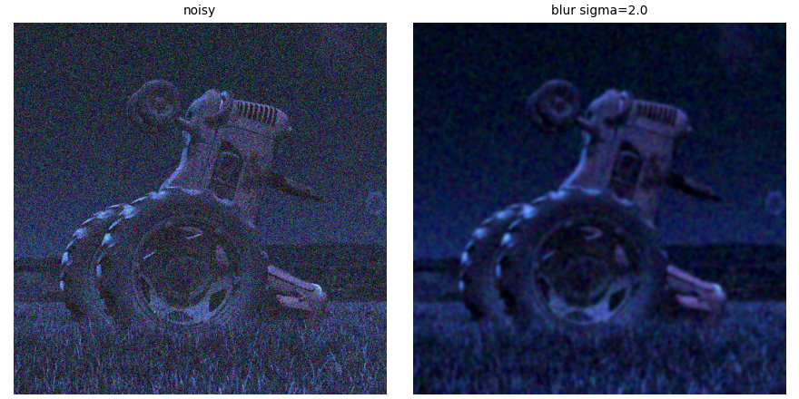
t = 0.75
One-Step Denoising
Now, let's use the flow model! We're going to use a naive approach here, and not use Euler integration to denoise yet. First, we're going to use the linear interpolation again, but with the output of PixNerd:
\[ \hat{x}_1 = x_t + (1-t)v_{\theta}(x_t,t,c) \]
(A5)
Below are the results of this denoising method, with the same noise levels as before.
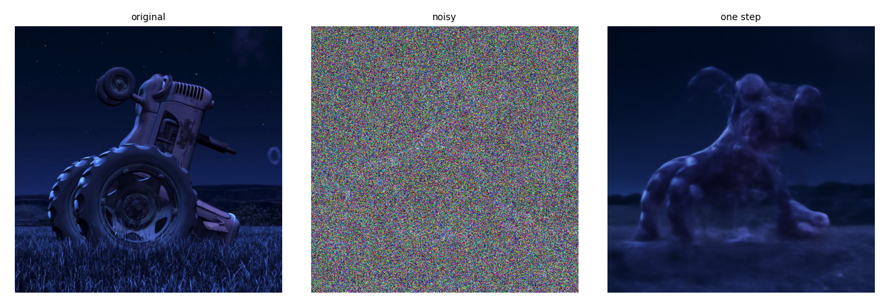
t = 0.25
t = 0.50
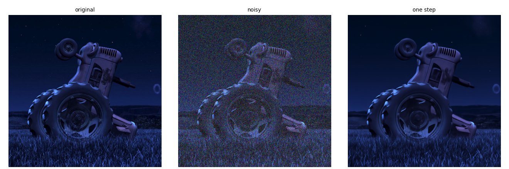
t = 0.75
Visualizing Velocity
Now, let's see what the model is actually trying to add with this one-step denoising setup. We know from equation A2 that \((1-t)v_{\theta}(x_t,t,c)=x_1-x_t\), so I'll be comparing the output of PixNerd with this ground truth velocity field, and recording the root-mean-square difference at each pixel. The heatmap should show where our model is incorrect in its predictions, and thus where the one-step denoising process went wrong.
original
Iterative Denoising with Euler Sampling
Now, let's use Euler integration to improve the generation quality of our samples! Euler integration works by taking a small step, predicting a new velocity, updating our prediction, and repeating:
\[ x_{t+h}=x_t+hv_{\theta}(x_t,t,c) \]
(A6)
Here, I'm starting at t=0.5 and integrating with step size of 0.02. Here's what that denoising process looks like:
And here's all of the methods using a start time of 0.5:
Clearly, Euler sampling performs the best with this image. Blurring leaves lots of large, ugly artifacts, and one-step denoising leaves some high-frequency features out, but Euler sampling gives a very comparable image.
Generating Images from Noise
Before, we've been using PixNerd to denoise one of my own images. But, one of the appealing factors of a flow model is its ability to generate new ones! First, we're going to try simply generating a model from noise using the generic condition "a high quality photo", and see what it creates. To do this, we use the Euler sampling from the previous part, but just start with Gaussian noise and t=0.
The unconditional samples seem to prefer human-looking subjects, which reflects that PixNerd must have been trained on many human portraits. Soon, we'll look into how to modify this setup to generate specific classes of images!
2. Conditional Generation and Guidance
Recall that PixNerd takes in conditioning. Let's exploit this fact to generate specific, higher-quality images!
Classifier-Free Guidance
In the previous section, it's pretty obvious that the "high-quality images" aren't super high-quality or accurate to human faces all of the time. We can enforce this conditioning better using classifier-free guidance (CFG)! The idea behind CFG is to separate out our predicted velocity field into an unconditional direction and a conditioning direction. Then, we can choose how much we want to condition our generation, i.e. how much to push it towards following the conditioning versus just making the most general image it can. We do this with the following velocity field:
\[ v_{\text{CFG}}=v_{\text{cond}} + w(v_{\text{cond}} - v_{\text{uncond}}) \]
(A7)
With this setup for CFG, a higher w means less strong conditioning, and 0 means regular conditional generation. Let's use \(w=7\) for now and all future setups for CFG in this part. Here are some "high quality photo"s using CFG:
3. Creative Applications
Image-to-Image Editing
We previously noised an image, then used PixNerd to denoise. We can use this method along with CFG to make edits to images! By noising images different amounts then denoising while giving some text to determine what edits should be made, we should be able to successfully edit images. The more we noise the image before this process, the larger the edits can get, since the more leeway we're giving the model to "hallucinate" aspects of the denoised image.
My personal favorite for the tractor is at t=0.25, where the model predicts some sort of wrestler doing a crazy pose instead of the tractor. I also think the different car generated at t=0.06 is pretty cool.
Where this gets even more cool is when we can put other images onto the manifold of natural objects! Starting from, say, a drawing or logo, we can make edits that make the image look like they came from something in the real world. I drew a duck (inspo from the Duck Song) and a tree at night, and tried this process on both. I also tried editing an image of the Cars logo.
At t=0.06 and t=0.10, the duck actually turned into a more 3D shape! And the model predicted my image of a tree as more mushroom-like, seemingly, at t=0.14. It's also interesting how the Cars logo stayed in the same shape at t=0.10 but the name on the logo changed. Aside from these results, the model seemingly collapsed in either direction. At smaller t values, PixNerd devolved into faces again, and at larger ones, the generations were extremely similar to the true images.
Text-Guided Image Editing
Now, instead of just generating "high-quality-photo"s, let's design our own edits! By changing the text conditioning during CFG, we can choose what the edits we make should look like. Below I have some examples of the above images with specific edits.
For the Titanic edit, I prefer t=0.04, since it still keeps some structure from the original (and the middle stripe) but doesn't look too awkward (although t=0.10 looks pretty good too!) For the tractor edit, I really like how realistic t=0.25 looks while still keeping the shape of the original tractor. And I like how the fire truck replaces Lightning McQueen in t=0.06.
Visual Anagrams
We can also use this CFG sampling method to generate an optical illusion! This method, called a visual anagram, shows one image when looked at from one direction and another image when flipped upside down. We can use the following algorithm to create a velocity field specifically created to generate these images:
\[ v_1=v_{\text{cfg}}(x_t,t,c_1), \quad v_2=\text{flip}(v_{\text{cfg}}(\text{flip}(x_t),t,c_2)), \quad v = \frac{v_1+v_2}{2} \]
(A8)
In this case, velocity 1 maps to an image when looked at right side up, and velocity 2 maps onto the manifold of upside down images that follow the second prompt. Here's what this looks like for a few prompts of mine:
Hybrid Images
We can use a similar technique of combining different velocity fields to create hybrid images. In this case, we're going to use the low-pass estimate of one prompt and the high-pass estimate of another prompt, then combine. This will get us one image when seen up close, and another image when seen from far away! This technique is very similar to how we generated hybrid images in the previous project, but using flow fields to create images instead.
\[ v_1=v_{\text{cfg}}(x_t,t,c_1), \quad v_2=v_{\text{cfg}}(x_t,t,c_2), \quad v = G_\sigma(v_1) + \left(v_2 - G_\sigma(v_2)\right) \]
(A9)
Note that in this case G has kernel size 265 and sigma value of 16. Here's this method implemented for a few prompts:
Up close: "a photograph of an angel
with a torso and face"
From far away:
"a photograph of a
monarch butterfly"
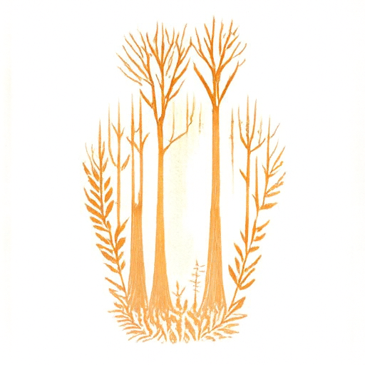
Up close: "a lithograph
of a forest"
From far away:
"a lithograph of a vase"
Part B: Flow Matching from Scratch
In this part, I'll be training my own flow matching model using a U-Net architecture on MNIST! I'll be implementing various forms of conditioning too, like time and class conditioning.
1. Training a Single-Step Denoising UNet
Before we train a whole model, let's try a similar image-to-image problem to verify that our U-Net works. In this scenario, we input a noisy image, \(z=x+\sigma\epsilon\), and then want the model to predict the denoised image \(x\). Our loss is also L2 as before:
\[ \mathcal{L}(\theta) = \mathbb{E}_{z,x} \left\| D_{\theta}(z) - x \right\|^2 \]
(B1)
Implementing the UNet
First, we have to implement a U-Net. This is an architecture designed for image-to-image problems, and does a series of convolution layers combined with upsamples and downsamples, so that it outputs an image of the same size as the input. Here's what my U-Net implementation looks like:
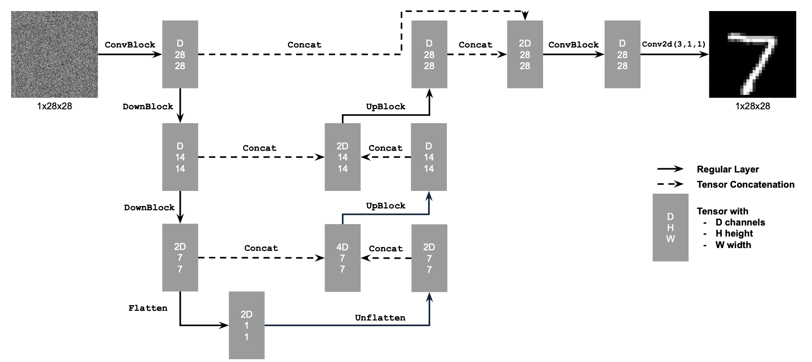
Unconditional UNet architecture.
Using the UNet to Train a Denoiser
Now let's train our denoiser! First, let's create data pairs \((x,z)\), where x is the clean image and z is the noised image, according to the equation in the intro of this part. Here's what some noised images z look like:
Training
We'll first denoise with a constant \(\sigma=0.5\) applied to clean images. Here are the hyperparameters I used for training:
| Batch size | 256 |
|---|
| Epochs | 5 |
|---|
| Hidden dim D | 128 |
|---|
| Optimizer | Adam |
|---|
| Learning rate | 1e-4 |
|---|
| Noise level σ | 0.5 (fixed) |
|---|
And my loss plot/results:
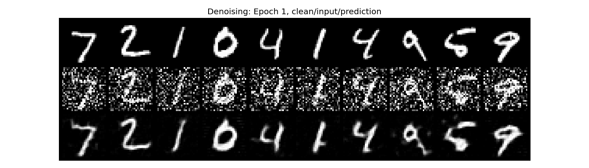
Epoch 1
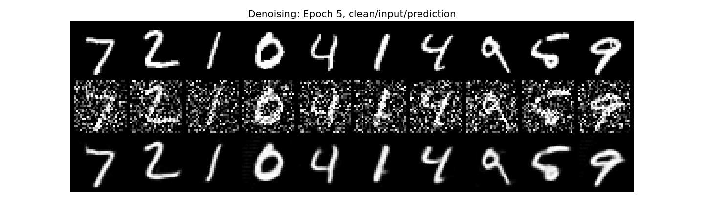
Epoch 5
Out-of-Distribution Testing
Let's now try using our trained model with different noise levels! Here's what attempted denoising looks like with our current U-Net:
As you can see, the denoising process works quite well until getting past a sigma around 0.6. At that point, the amount of noise is larger than the U-Net has been trained to remove, so it performs worse since this test data is out of distribution.
Denoising Pure Noise
In Part A, we could use PixNerd to generate images from pure Gaussian noise. Let's try doing this with our traditional denoiser: set \(z=\epsilon\) directly and train with that. Here's my results with that methodology:
Epoch 1
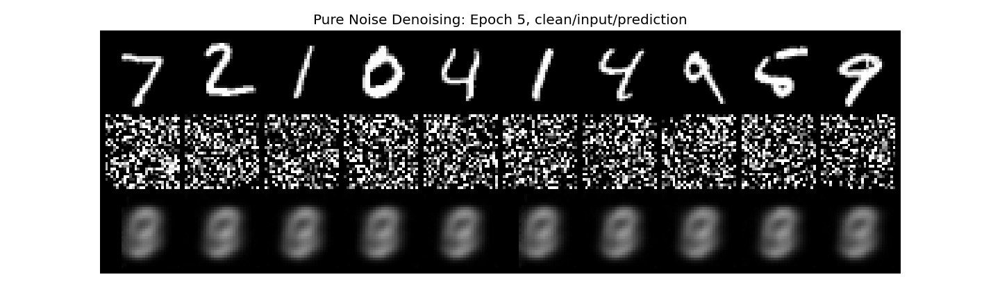
Epoch 5
As you can see, the loss ends up plateauing at about 0.1 instead of near 0, and all the generated images show a blurred, unclassifiable image. In effect, the U-Net just learned to always output the mean of the distribution of numbers. Since the input noise has effectively no important information that would help determine which number the model must generate, the model learns to ignore the input and just produce what constant output will minimize the L2 loss. In this case, this refers to the mean of all images in the dataset.
2. Training a Flow Matching Model
From the previous part, it's pretty clear that there are significant issues in using a pure denoiser to generate images or denoise existing images. Instead, we can use the optimal transport flow matching formulation from equations A1 through A3. We'll be training the U-Net to predict the velocity field as described in those equations above, and using an L2 loss.
Adding Time Conditioning to UNet
Recall that \(v_{\theta}\) in equation A2 depends on the timestep. So, we should modify our U-Net to condition on time as well! Below is how I modified the architecture to allow for time conditioning:
 Conditioned UNet architecture. The red box highlights the FCBlock conditioning path that injects \(t\) (and later, class \(c\)) into the bottleneck and second-to-last upsampling stage.
Conditioned UNet architecture. The red box highlights the FCBlock conditioning path that injects \(t\) (and later, class \(c\)) into the bottleneck and second-to-last upsampling stage.
We embed the time conditioning by adding a linear layer, inputting time, then multiplying intermediate feature maps of our U-Net with this time vector.
Training the UNet
Training is a little bit more complex than the denoiser, but not much more so! All we do at each iteration is pick a random timestep, add noise to get \(x_t\), then train the denoiser to predict the flow. Below is what the algorithm looks like, the hyperparameters I used for training, and the final loss plot:
| Batch size | 64 |
|---|
| Epochs | 10 |
|---|
| Hidden dim D | 128 |
|---|
| Optimizer | Adam |
|---|
| Initial learning rate | 1e-2 |
|---|
| LR scheduler | ExponentialLR, γ = 0.11/10 ≈ 0.794, stepped every epoch |
|---|
 Algorithm B1. Training time-conditioned UNet
Algorithm B1. Training time-conditioned UNet
Sampling from the UNet
Now, we can use equation A6 to Euler sample from this U-Net and generate new numbers! Here's what this looks like across the training run:
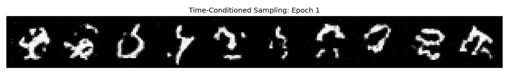
Epoch 1
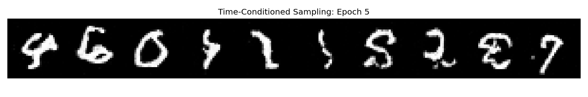
Epoch 5
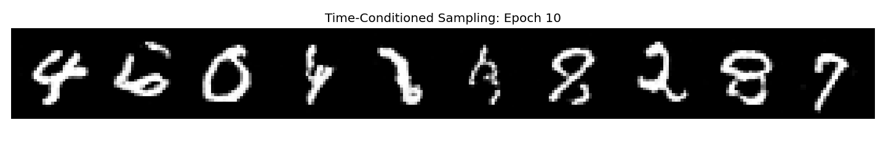
Epoch 10
Adding Class-Conditioning to UNet
Now, we want to complete a regular implementation of flow matching by also conditioning by class (number in this case). We're going to use a one-hot encoding 10-dimensional vector in this case, and put this through different linear layers. Now, we multiply our feature maps by this class conditioning, and add the time conditioning instead.
Recall that we will later want to use CFG on this U-Net, which means we need to train unconditional generation too. So, with probability \(p_{\text{dropout}}=0.1\), I'll be setting the class conditioning embedding to 0. Then, the model will learn both conditional and unconditional generation, and enable use to perform CFG.
Training the UNet
The training is very similar to the previous algorithm, except for creating this one-hot encoding vector and passing this into the model. Here's what my training loss curve looks like:
| Batch size | 64 |
|---|
| Epochs | 10 |
|---|
| Hidden dim D | 128 |
|---|
| Optimizer | Adam |
|---|
| Initial learning rate | 1e-2 |
|---|
| LR scheduler | ExponentialLR, γ = 0.11/10 ≈ 0.794, stepped every epoch |
|---|
| Class dropout \(p_{\text{dropout}}\) | 0.1 |
|---|
Sampling from the UNet
For a good class conditioning, I'll be sampling using CFG, as we do in part A of this project. Here's the algorithm I used to generate these class-conditional samples:
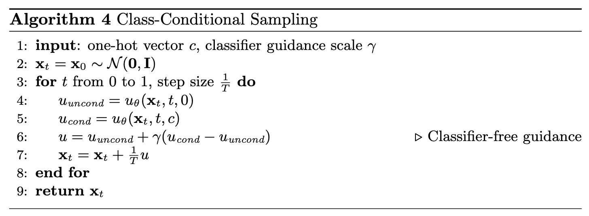
Algorithm B2. Sampling from class-conditioned UNet
Note that in this case, we do \(v_{\text{CFG}}=v_{\text{uncond}} + \gamma(v_{\text{cond}} - v_{\text{uncond}})\) instead of starting with the conditional velocity. This turns out to be the same idea, just implemented slightly differently. In this case, a higher gamma means more conditional sampling, instead of more unconditional sampling. We choose \(\gamma=5\).
Now here's the results of training:
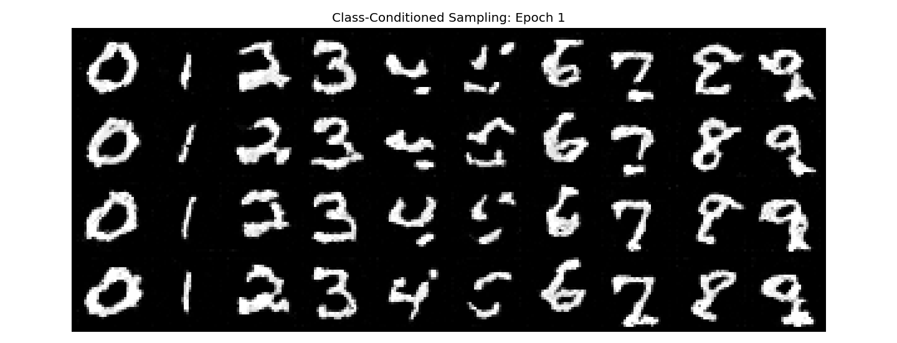
Epoch 1
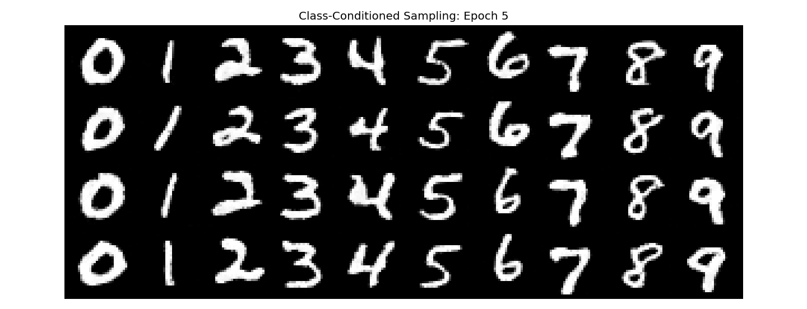
Epoch 5
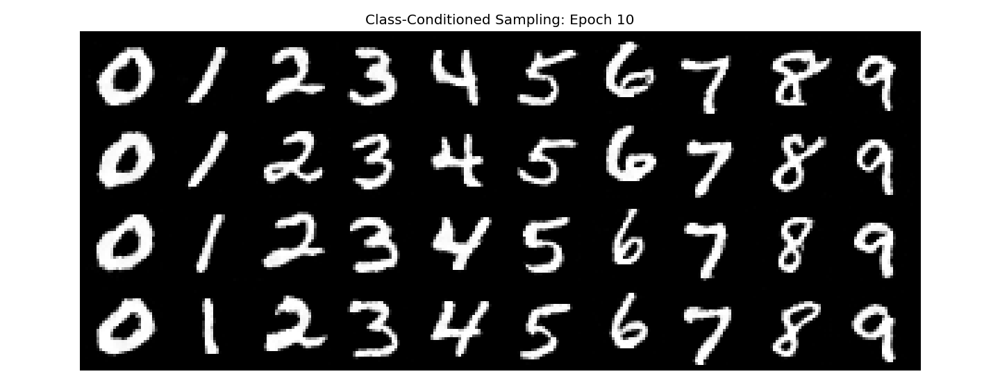
Epoch 10
As you can see, class conditioning works quite well! The model creates highly accurate numbers compared to the solely time-conditioned U-Net. This is because class conditioning helps the model separate where on the manifold each number lies much more effectively than without conditioning, so the model converges faster.
Simplifying Training
As you can see in the above section, I implemented an exponential learning rate scheduler when training the U-Net. This improves the stability of training, but makes the training code more annoying. I want to get similar results without this, so I'll try and use a constant, smaller learning rate and try to get similar results. Here's my new training parameters, loss plot, and results:
| Batch size | 64 |
|---|
| Epochs | 10 |
|---|
| Hidden dim D | 128 |
|---|
| Optimizer | Adam |
|---|
| Learning rate | 1e-3 (constant, no scheduler) |
|---|
| Class dropout \(p_{\text{dropout}}\) | 0.1 |
|---|
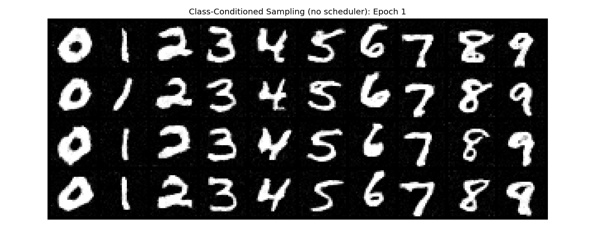
Epoch 1
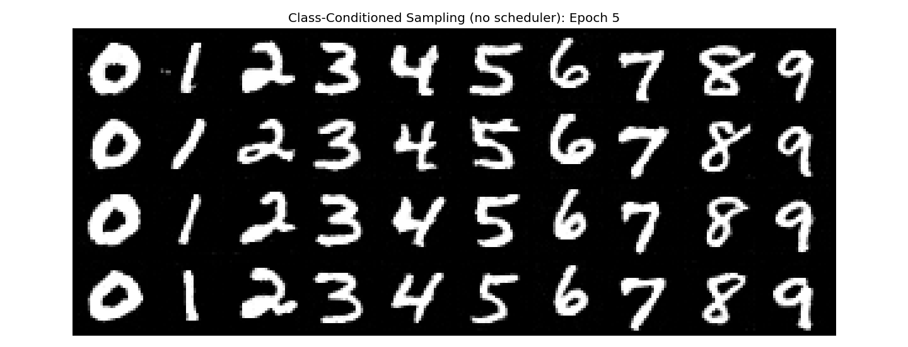
Epoch 5
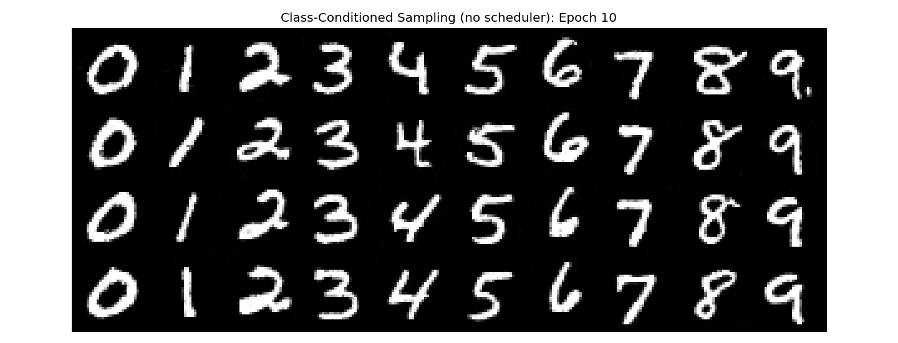
Epoch 10